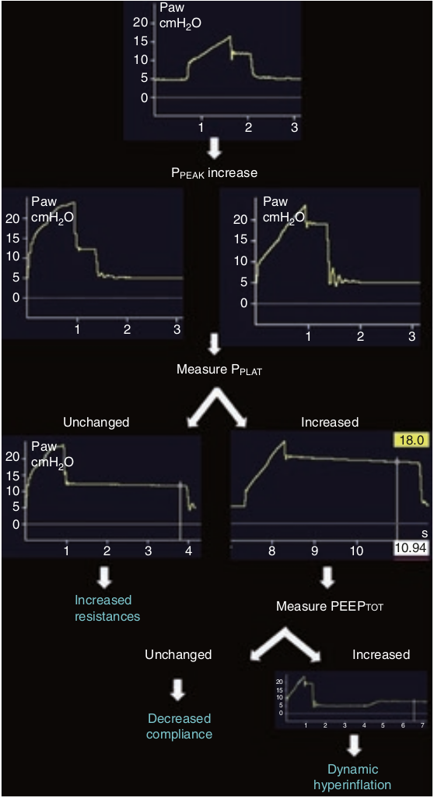

با توجه به معادله حرکت ریه، افزایش PPEAK ممکن است بخاطر افزایش مقاومت، افزایش PEEPTOT، کاهش کمپلیانس و یا ترکیبی از این موارد روی دهد. برای تفکیک افزایش مقاومت از کاهش کمپلیانس اولین کار انجام مانور انسداد پایان دمی برای اندازه گیری PPLAT میباشد. چنانچه PPLAT تغییری نکرده باشد، افزایش PPEAK بخاطر افزایش مقاومت می باشد. چنانچه PPLAT افزایش یافته باشد، افزایش PPEAK یا بخاطر کاهش کمپلیانس است و یا بخاطر افزایش PEEPTOT است که برای تفکیک این دو باید یک مانور انسداد پایان بازدمی انجام دهیم تا PEEPTOT را اندازه گیری کنیم.

هنگام کنترل حجمی کدام مورد زیر سبب فعال شدن آلارم فشار زیاد نمی شود؟
۱ - ترشح زیاد در لوله تراشه
۲ - آمبولی ریه
۳ - اتساع مفرط دینامیک
۴ - پنوموتوراکس
۵ - برونکواسپاسم